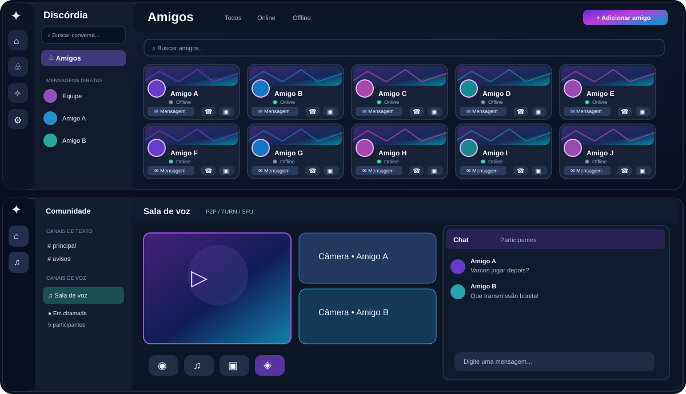

Conexão entre dispositivos, quando possível.
◉ CONVERSA E MÍDIA
RC15.2 · VERSÃO CANDIDATA DISPONÍVEL
SUA GALERA.
SUA GALERA.
SEU JOGO.
SEU LUGAR.
A RC15.2 Versão candidata é um hotfix da RC15.1: o botão de pulso duplicado foi removido e Ocultar barras mantém a transmissão visível. Sem novas funcionalidades. O instalador Windows mantém atualização automática com instalação silenciosa; a portátil informa quando há uma versão nova. Próxima Estável: 1.1 após os testes.
Windows 10 e 11 · v1.0.3-rc.15.2 · Versão candidata · Instalador e portátil● ● ● DISCÓRDIA DESKTOP ● ONLINE
✦ Nosso lugarCANAIS DE TEXTO# geral# jogosCANAIS DE VOZ◉ Galera reunida
FLE
☺ Você · Online
◉ Galera reunida ● CONECTADO
✦A PARTIDA COMEÇA AQUI▣ Compartilhando tela
☺ Amigo online✿ Mais um na sala
✦A galera chegou!Conversa em andamento
♛Snake globalPartiu jogar?
CENA ILUSTRATIVA · NÃO É UMA CAPTURA REAL
CONVERSE ✦ JOGUE JUNTO ✦ COMPARTILHE ✦ CRIE SEU ESPAÇO ✦ CONVERSE ✦ JOGUE JUNTO ✦ COMPARTILHE ✦
✦ SALA DA GALERA
◉ No canal de voz AO VIVO
☺Cheguei!conectado
✿Bora jogar?conectado
★Tô entrandoconectado
♫ VOZ E PRESENÇA ● CONECTADOS
01 / A CONVERSA CONTINUAENTROU NA SALA?
ENTROU NA SALA?
JÁ É DA GALERA.
Aquele papo antes da partida, as risadas no meio do jogo e a conversa que não acaba quando o placar fecha. Fique por perto de quem importa.
Veja como as conexões funcionam ↗02 / COMPARTILHE A PARTIDAO JOGO É SEU.
O JOGO É SEU.
A TORCIDA É NOSSA.
Mostre a tela, acompanhe os amigos e escolha como transmitir. O Palco reúne seus momentos, com recursos que continuam evoluindo a cada versão.
Conheça o VeloSinc ↗◉ PALCO DO DISCÓRDIA ● CONECTADO

▣ Compartilhando tela
⚡ VeloSinc em evolução
✦SEU CLIMA
◈SEU ESTILO
 THEME STUDIODO SEU JEITO.TEMAS .DISCA · SONS · CORES
THEME STUDIODO SEU JEITO.TEMAS .DISCA · SONS · CORES03 / SEU UNIVERSONADA DE
NADA DE
FICAR SEM GRAÇA.
Personalize a experiência com temas e detalhes que combinam com você. E, entre uma conversa e outra, ainda tem o Snake global para desafiar os amigos.
Conheça o aplicativo ↗CONEXÕES INTELIGENTES · EM EVOLUÇÃOCADA PARTIDA.
CADA PARTIDA.
UMA CONEXÃO QUE ACOMPANHA.
O Discórdia combina caminhos diferentes para conectar os amigos e compartilhar a experiência. Cada modo tem sua função — e a rota disponível depende da rede, da versão e da infraestrutura.
VOCÊCompartilhandoRetransmissão quando a ligação direta não é viável.
◉ CONVERSA E MÍDIATransmissão de vídeo e som da tela para espectadores autorizados, conforme o recurso habilitado.
◉ TRANSMISSÃORepresentação ilustrativa. O microfone permanece nos caminhos P2P/TURN; as funções SFU dependem da versão e dos testes de homologação.
APRESENTANDO UMA TECNOLOGIA DO PROJETO
VeloSinc✦
NÃO BASTA ENVIAR.
NÃO BASTA ENVIAR.
PRECISA CHEGAR BEM.
O VeloSinc está sendo desenvolvido para acompanhar a qualidade da transmissão tanto de quem envia quanto de quem recebe — ajudando a identificar gargalos e escolher ajustes compatíveis com cada sessão.
MONITORAMENTOTRANSMISSÃORECEPÇÃORECUPERAÇÃO
Em desenvolvimento e testes. Não garante ganho de FPS, eliminações de atraso ou disponibilidade de todos os recursos.
CAPTURA
▧QUADROS
TRANSMISSOREXIBIÇÃO
▷IMAGEM
RECEPTOR✦ VELOSINC · MONITORANDO
A GENTE CONTINUA CONSTRUINDO
FEITO COM AMIGOS.
FEITO COM AMIGOS.
MELHOR A CADA VERSÃO.
O Discórdia cresceu com testes reais e as ideias da comunidade. Na RC15.2, mantivemos o autorizador com instalação silenciosa para a edição instalada e aprimoramos o Palco, o VeloSinc e o acesso Minha Conta. Correções pontuais publicadas na RC15.2; as próximas versões serão RC16 e RC17.
Conhecer o histórico completo de versões ↗
APOIO VOLUNTÁRIO · EM PREPARAÇÃO
O FUTURO DA GALERA
O FUTURO DA GALERA
SE CONSTRÓI JUNTO.
Somos um projeto independente. Quando a campanha estiver aprovada, quem quiser poderá ajudar com infraestrutura, backups e melhorias. Conversas, voz e funcionalidades essenciais continuarão gratuitas.
META MENSAL PROPOSTAR$ 200 / mêsValor preliminar de planejamento, não uma arrecadação atual ou uma despesa comprovada.
Conheça nosso plano de apoio
Contribuições ainda não estão disponíveis. O APOIA.se depende da aprovação do cadastro.
SUA PRÓXIMA PARTIDA COMEÇA AQUIBORA ENTRAR
RC15.2 publicada · Versão candidata
BORA ENTRAR
NO DISCÓRDIA?
Baixe a RC15.2 Versão candidata para Windows 10 e 11 (x64). Atualizações automáticas reativadas, instalação silenciosa para novas versões elegíveis e organização melhorada de Amigos e convites. A RC15.2 corrige os últimos problemas de interface; os próximos ciclos serão RC16 e RC17. As próximas RCs de desenvolvimento serão 16 e 17; a Estável 1.1 depende da homologação.
✦ PARA QUEM TESTARC15.2 / TESTERS
Discórdia RC15.2 · Versão candidata.
Correções diretas: remover o botão de pulso duplicado e manter o vídeo aparecendo ao ocultar barras do Palco. VeloSinc, áudio e Minha Conta preservados. Atualização silenciosa na edição instalada; portátil com aviso de atualização.
v1.0.3-rc.15.2 · Versão candidata · Windows x64 Pré-lançamento para testers. Se você já instalou a RC15.1 e permanece no canal Testers, a RC15.2 poderá chegar pelo atualizador oficial, respeitando a disponibilidade dos arquivos e as permissões do Windows. A portátil apenas informa a existência de nova versão. O portátil somente avisa quando houver download. Próximas versões: RC16 e RC17.◈ PRÓXIMA ETAPAESTÁVEL 1.1 · FUTURA
Estável 1.1 · depois dos testes.
A próxima versão Estável será a Discórdia 1.1. Ela só será disponibilizada após a RC15.2 passar pela homologação real de login, voz entre computadores, transmissão SFU com áudio da tela, VeloSinc, atualização e exclusão de Servir a dor.
Estável 1.1 · em preparação · sem downloadDisponível após homologação
Nenhuma edição Estável está sendo oferecida para download neste site.
Atenção: a RC15.2 é uma versão candidata de testes, não Estável. A antiga Estável 1.0.3 foi retirada da distribuição recomendada por problemas de atualização e compatibilidade. Não apague seus dados locais ao reinstalar. Recursos de SFU, VeloSinc e exclusão de Servir a dor ainda exigem homologação prática antes da futura Estável 1.1.
Apenas RC15.2 oferecida neste site. Executáveis, rc.yml e hashes SHA-256 publicados oficialmente.Ver notas oficiais e SHA-256 ↗
TUDO O QUE VOCÊ PRECISA SABERPERGUNTAS?
PERGUNTAS?
A GENTE RESPONDE.
Algumas informações importantes para começar a usar o Discórdia com tranquilidade.
Em quais computadores posso usar?
O Discórdia Desktop foi desenvolvido para Windows 10 e 11, em computadores x64. O desempenho de chamadas, câmera e compartilhamento depende do equipamento e da conexão.
Qual a diferença entre instalador e portátil?
O instalador adiciona o aplicativo ao Windows. A edição portátil pode ser executada sem uma instalação tradicional. Consulte sempre as instruções de cada Release.
O que é a RC15.2?
A RC15.2 é a versão candidata 1.0.3-rc.15.2, destinada aos testers. Mantém o atualizador automático do instalador e acrescenta Minha Conta, melhorias no Palco e no VeloSinc. A próxima Estável será a 1.1, disponibilizada somente após os testes e a homologação.
Como confirmar se o download é oficial?
Use os links para o GitHub Releases oficial e confira o SHA-256 publicado junto da versão. Se o Windows exibir um aviso de editor não verificado, confira a origem do arquivo; não desative proteções do sistema.
O VeloSinc já está completo?
Não. O VeloSinc continua evoluindo em versões de testes e depende de homologação. As ilustrações do site explicam a ideia, não comprovam que todas as funções estão disponíveis.
Já posso contribuir pelo APOIA.se?
A campanha está em preparação e depende da verificação documental da plataforma. Enquanto isso, a página Apoie o projeto explica a proposta, sem solicitar pagamento.
E a privacidade?
Você pode ler as informações de tratamento de dados na nossa página de privacidade.
AGORA É COM VOCÊ
A PRÓXIMA
HISTÓRIA COMEÇA
NA SUA GALERA.
Uma conversa pode virar amizade. Uma partida pode render histórias. Bora fazer isso acontecer?
↓ Baixar o Discórdia